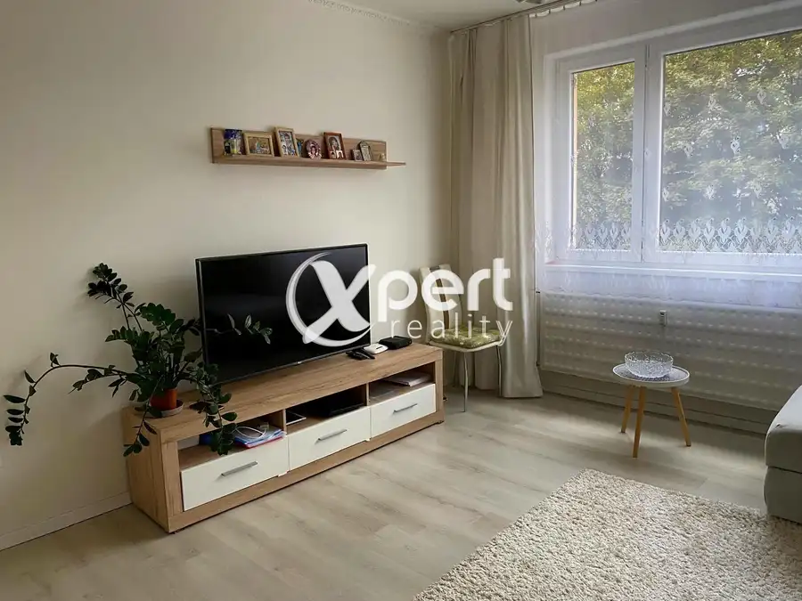

Predaj · Pozemok
Pozemok, lesopark, zeleň, rekreácia
Ňárad
35 000 €5 € za m²
- Plocha7530 m²
- VlastníctvoOsobné
O nehnuteľnosti
Ponúkam vám na predaj pekný rekreačný pozemok.Spomínaný pozemok sa nachádza v katastrálnom území Ňárad, je umiestnený v tichom a príjemnom prostredí s prístupom neďaleko od hlavnej cesty medzi Ňáradom a Sapom.Dunaj je od pozemku vzdialená asi cca. 600 metrov.Slnečný pozemok ponúka krásne výhľady na okolitú prírodu.Dunaj je druhá najdlhšia rieka v Európe s dĺžkou 2850 km, preteká desiatimi krajinami a vlieva sa do Čierneho mora.Druh pozemku: Orná poda a vodná plocha spolu má : 7530 m2Pozemok je vhodný na výstavbu rekreačného domu.IS: elektrina v dosahu,Cena: 35.000.€Kontakt:Ladislav TAKÁCSMobil: +421 907 419559E-mail: takacs@xpertreality.skWeb: http://www.xpertreality.sk
Parametre
| Druh | Rekreačný pozemok |
|---|---|
| Dátum zverejnenia | 5. 2. 2014 |
| Dĺžka pozemku | 75 |
| Plocha pozemku | 7530 m² |
| Prístupová komunikácia | Neupravená |
| Terén pozemku | Rovinatý |
| Typ | Predaj |
| Vlastníctvo | Osobné |
| Územie | Extravilán |
| Šírka pozemku | 100 |
Kde to je


Ďalšie ponuky
Celá ponukaMohlo by Vás zaujímať
 DomNové10
47 000 €3 izb. Rodinný dom -Znížená cena!
Medveďov
100 m²
Ponúkam na predaj 3 izbový dom v príjemnej časti Žitného ostrova v obci Medveďov.Dom sa nachádza v centre obci na pozemku o výmere 330 + 990m2 s…
DomNové10
47 000 €3 izb. Rodinný dom -Znížená cena!
Medveďov
100 m²
Ponúkam na predaj 3 izbový dom v príjemnej časti Žitného ostrova v obci Medveďov.Dom sa nachádza v centre obci na pozemku o výmere 330 + 990m2 s…
 PozemokNové2
33 000 €Znížená cena! Záhrada v obci Baloň v Medzičilizí
Baloň
2300 m²
Ponúkame na predaj záhradu vo výmere 2300 m2. Pozemok je vhodný na pestovanie zeleniny, ovocie alebo na rekreáciu. Nachádza sa v zastavanej časti…
PozemokNové2
33 000 €Znížená cena! Záhrada v obci Baloň v Medzičilizí
Baloň
2300 m²
Ponúkame na predaj záhradu vo výmere 2300 m2. Pozemok je vhodný na pestovanie zeleniny, ovocie alebo na rekreáciu. Nachádza sa v zastavanej časti…

BytNové10 125 000 €Krásny 3-izbový byt na Námestie Priateľstva Dunajská Streda 3-izbový60 m²2. podlažie Slnečný 3-izbový byt – pripravený na okamžité bývanie.Hľadáte bývanie, do ktorého sa môžete ihneď nasťahovať bez ďalších investícií? Potom vás tento…